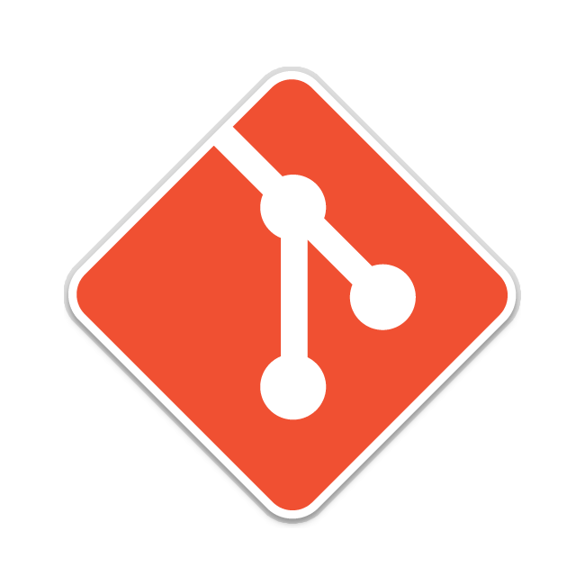

Entrega Final
Introdução
Neste artefato, apresentaremos a entrega final do projeto, incluindo um resumo conciso de tudo o que foi desenvolvido ao longo do semestre.
Aplicativo Selecionado
O Aplicativo Selecionado para estudo na disciplina é o Booking. Ele é uma plataforma de viagens que oferece a possibilidade de pesquisar, reservar e gerenciar acomodações, aluguéis de carros e pacotes turísticos. O Booking é amplamente utilizado em todo o mundo, sendo reconhecido por sua popularidade. Ele foi escolhido como objeto de estudo para o projeto de Requisitos de Software devido à sua complexidade e à diversidade de funcionalidades que oferece. Além disso, é relativamente fácil de contatar usuários.
Cronograma Planejado
| Entrega | Início | Entrega |
|---|---|---|
| Planejamento | 01/04/2023 | 13/04/2023 |
| Elicitação | 12/04/2023 | 01/05/2023 |
| Modelagem de Requisitos - Padrão | 02/05/2023 | 17/05/2023 |
| Modelagem de Requisitos - Ágil | 18/05/2023 | 24/05/2023 |
| Verificação e Validação – Grupo + 1 | 25/05/2023 | 07/06/2023 |
| Verificação e Validação | 08/06/2023 | 14/06/2023 |
| Pós-Rastreabilidade - Gerência II | 15/06/2023 | 21/06/2023 |
| Entrega Final | 22/06/2023 | 05/07/2023 |
Tabela 1 - Cronograma geral da equipe. (Fonte: Autores. 2023).
Entrega 1 - Planejamento
A entrega da apresentação do projeto etapa 1 é um momento crucial para o desenvolvimento de um projeto. Nesta etapa, são definidos os principais aspectos do projeto, tais como o planejamento, a equipe, o aplicativo selecionado para a disciplina, as ferramentas do projeto, o cronograma das atividades e o Rich Picture.
Cada um desses elementos é fundamental para o sucesso do projeto e deve ser cuidadosamente planejado e executado. Os pontos planejados podem ser observados na Tabela 2.
| Tarefa | Autor(es) | Período de desenvolvimento | Período de revisão | Revisores |
|---|---|---|---|---|
| Criação da documentação do projeto | Chaydson | 01/04/2023 à 03/04/2023 | 12/04/2023 | Lucas |
| Equipe | Henrique | 03/04/2023 à 11/04/2023 | 12/04/2023 | Chaydson |
| Planejamento do Projeto | Chaydson, Lucas, Gabriel, Samuel, Henrique e Pedro | 03/04/2023 à 11/04/2023 | 12/04/2023 | Gabriel |
| Atas | Lucas - Gabriel | 03/04/2023 à 11/04/2023 | 12/04/2023 | Pedro |
| Lista de apps | Samuel | 03/04/2023 à 11/04/2023 | 12/04/2023 | Chaydson, Lucas, Gabriel, Samuel, Henrique e Pedro |
| App selecionado para o projeto da disciplina | Samuel | 03/04/2023 à 11/04/2023 | 12/04/2023 | Lucas e Pedro |
| Ferramentas do projeto | Pedro | 03/04/2023 à 11/04/2023 | 12/04/2023 | Chaydson |
| Cronograma detalhado das atividades do projeto | Chaydson | 03/04/2023 à 11/04/2023 | 12/04/2023 | Chaydson, Lucas, Gabriel, Samuel, Henrique e Pedro |
| Rich Picture | Lucas - Gabriel | 03/04/2023 à 11/04/2023 | 12/04/2023 | Henrique |
| Quadro de Disponibilidade de Membros | Gabriel | 03/04/2023 à 11/04/2023 | 12/04/2023 | Lucas |
| Metodologia e Politicas | Gabriel | 03/04/2023 à 11/04/2023 | 12/04/2023 | Henrique |
| Gravação da apresentação | Chaydson, Lucas, Gabriel, Samuel, Henrique e Pedro | 12/04/2023 | 13/04/2023 | Samuel |
| Criação do cronograma realizado | Lucas | 03/04/2023 à 11/04/2023 | 13/04/2023 | Chaydson |
| Finalização | Chaydson, Lucas, Gabriel, Samuel, Henrique e Pedro | 13/04/2023 | 13/04/2023 | Chaydson, Lucas, Gabriel, Samuel, Henrique e Pedro |
Tabela 2 - Cronograma da entrega 1. (Fonte: Autores. 2023).
Entrega 2 - Elicitação – Técnicas e Priorização
A priorização é fundamental para garantir que as funcionalidades mais importantes sejam implementadas primeiro. Dessa forma, as tarefas referentes a segunda entrega estão apresentadas na Tabela 3 as técnicas de priorização utilizadas no projeto.
| Tarefa | Autor(es) | Período de desenvolvimento | Período de revisão | Revisores |
|---|---|---|---|---|
| Perfil dos usuários | Pedro e Henrique | 12/04/2023 à 19/04/2023 | 20/04/2023 à 21/04/2023 | Gabriel |
| Personas | Chaydson e Gabriel | 19/04/2023 à 25/04/2023 | 26/04/2023 à 27/04/2023 | Lucas |
| Storytelling | Lucas e Samuel | 19/04/2023 à 25/04/2023 | 26/04/2023 à 27/04/2023 | Gabriel |
| Observação | Pedro e Chaydson | 19/04/2023 à 25/04/2023 | 26/04/2023 à 27/04/2023 | Samuel |
| Brainstorming | Samuel e Gabriel | 19/04/2023 à 25/04/2023 | 26/04/2023 à 27/04/2023 | Henrique |
| Three Level-Scale | Henrique e Lucas | 19/04/2023 à 25/04/2023 | 26/04/2023 à 27/04/2023 | Pedro |
| In or Out | Samuel e Pedro | 19/04/2023 à 25/04/2023 | 26/04/2023 à 27/04/2023 | Lucas |
| MoSCoW | Chaydson, Lucas e Henrique | 19/04/2023 à 25/04/2023 | 26/04/2023 à 27/04/2023 | Pedro |
| Gravação da apresentação | Chaydson, Lucas, Gabriel, Samuel, Henrique e Pedro | 28/04/2023 | 28/04/2023 | Chaydson |
| Atas | Gabriel | 19/04/2023 à 25/04/2023 | 26/04/2023 à 27/04/2023 | Henrique |
| Finalização | Chaydson, Lucas, Gabriel, Samuel, Henrique e Pedro | 29/04/2023 | 30/04/2023 à 01/05/2023 | Chaydson, Lucas, Gabriel, Samuel, Henrique e Pedro |
Tabela 3 - Cronograma da entrega 2. (Fonte: Autores. 2023).
Entrega 3 - Modelagem de Requisitos - Padrão
Nesta entrega, serão apresentados os cenários, o léxico, o use case e a especificação suplementar que foram definidos durante o desenvolvimento do projeto. Cada um desses elementos é fundamental para garantir que os requisitos do projeto sejam entendidos e atendidos corretamente, garantindo a qualidade e efetividade do produto final. Encontra-se na Tabela 4 o planejamento dessa entrega.
| Tarefa | Autor(es) | Período de desenvolvimento | Período de revisão | Revisores |
|---|---|---|---|---|
| Cenários | Lucas e Gabriel | 02/05/2023 à 11/05/2023 | 12/05/2023 à 13/05/2023 | Chaydson |
| Léxico | Pedro e Samuel | 02/05/2023 à 11/05/2023 | 12/05/2023 à 13/05/2023 | Lucas |
| Use Case | Samuel | 02/05/2023 à 11/05/2023 | 12/05/2023 à 13/05/2023 | Henrique |
| Especificação Suplementar | Chaydson e Henrique | 02/05/2023 à 11/05/2023 | 12/05/2023 à 13/05/2023 | Pedro |
| Atas | Lucas | 02/05/2023 à 11/05/2023 | 12/05/2023 à 13/05/2023 | Samuel |
| Gravação da apresentação | Chaydson, Lucas, Gabriel, Samuel, Henrique e Pedro | 14/05/2023 | 15/05/2023 | Gabriel |
| Finalização | Chaydson, Lucas, Gabriel, Samuel, Henrique e Pedro | 16/05/2023 | 17/05/2023 | Chaydson, Lucas, Gabriel, Samuel, Henrique e Pedro |
Tabela 4 - Cronograma da entrega 3. (Fonte: Autores. 2023).
Entrega 4 - Modelagem de Requisitos - Ágil
Nesta etapa, serão apresentadas as histórias de usuário, o backlog do produto e do sprint, além do framework de requisitos não-funcionais (NFR). Esses elementos são fundamentais para o sucesso de um projeto ágil, pois permitem a gestão eficiente dos requisitos do produto e garantem que as necessidades dos usuários sejam atendidas de forma satisfatória. O planejamento completo se encontra na Tabela 5.
| Tarefa | Autor(es) | Período de desenvolvimento | Período de revisão | Revisores |
|---|---|---|---|---|
| Backlogs | Lucas e Chaydson | 18/05/2023 à 21/05/2023 | 21/05/2023 | Henrique |
| Histórias de Usuário | Pedro e Gabriel | 21/05/2023 à 23/05/2023 | 24/05/2023 | Samuel |
| NFR Framework | Samuel e Henrique | 21/05/2023 à 23/05/2023 | 24/05/2023 | Chaydson |
| Atas | Lucas | 21/05/2023 à 23/05/2023 | 24/05/2023 | Samuel |
| Gravação da apresentação | Chaydson, Lucas, Gabriel, Samuel, Henrique e Pedro | 24/05/2023 | 24/05/2023 | Lucas |
| Finalização | Chaydson, Lucas, Gabriel, Samuel, Henrique e Pedro | 24/05/2023 | 24/05/2023 | Chaydson, Lucas, Gabriel, Samuel, Henrique e Pedro |
Tabela 5 - Cronograma da entrega 4. (Fonte: Autores. 2023).
Entrega 5.1 - Análise de Requisitos: Verificação e Validação – Grupo 03 - VLC
Nesta etapa, serão apresentadas as atividades de verificação e validação dos requisitos do projeto, que visam garantir a qualidade e a adequação dos requisitos definidos para o produto.
Além disso, a entrega da etapa 5.1 é uma etapa importante no processo de desenvolvimento do projeto, pois indica que a equipe está comprometida em identificar e corrigir eventuais problemas na definição dos requisitos.
O planejamento completo está presente na Tabela 6.
| Tarefa | Autor(es) | Período de desenvolvimento |
|---|---|---|
| Cronogramas | Lucas | 02/06/2023 - 07/06/2023 |
| Lista de aplicativos | Pedro | 02/06/2023 - 07/06/2023 |
| Ferramentas | Samuel | 02/06/2023 - 07/06/2023 |
| Rich picture | Chaydson e Henrique | 02/06/2023 - 07/06/2023 |
| Perfil de usuário | Lucas e Chaydson | 02/06/2023 - 07/06/2023 |
| Personas | Samuel e Henrique | 02/06/2023 - 07/06/2023 |
| Questionario | Lucas | 02/06/2023 - 07/06/2023 |
| Storytelling | Gabriel e Chaydson | 02/06/2023 - 07/06/2023 |
| First Things First | Pedro e Gabriel | 02/06/2023 - 07/06/2023 |
| In or Out | Lucas e Henrique | 02/06/2023 - 07/06/2023 |
| MoSCoW | Samuel e Pedro | 02/06/2023 - 07/06/2023 |
| Casos de uso | Lucas | 02/06/2023 - 07/06/2023 |
| Cenários | Chaydson e Samuel | 02/06/2023 - 07/06/2023 |
| Léxico | Henrique e Chaydson | 02/06/2023 - 07/06/2023 |
| Especificação suplementar | Gabriel e Pedro | 02/06/2023 - 07/06/2023 |
| Histórias de usuário | Henrique e Samuel | 02/06/2023 - 07/06/2023 |
| Backlog | Pedro e Gabriel | 02/06/2023 - 07/06/2023 |
| NFR Framework | Chaydson e Lucas | 02/06/2023 - 07/06/2023 |
| Gravação da apresentação | Chaydson, Lucas, Gabriel, Samuel, Henrique e Pedro | 07/06/2023 |
| Finalização | Chaydson, Lucas, Gabriel, Samuel, Henrique e Pedro | 08/06/2023 - 15/06/2023 |
Tabela 6 - Cronograma da entrega 5.1. (Fonte: Autores. 2023).
Entrega 5.2 - Análise de Requisitos: Verificação e Validação
Nesta etapa, o grupo responsável pela atividade de verificação e validação dos requisitos irá apresentar os resultados obtidos durante a análise, bem como as atividades realizadas para garantir a qualidade e a adequação dos requisitos definidos para o produto. O cronograma desta entrega pode ser observada na Tabela 7.
| Tarefa | Autor(es) | Período de desenvolvimento | Período de revisão | Revisores |
|---|---|---|---|---|
| Verificar Rich Picture | Henrique, Pedro | 08/06/2023 à 12/06/2023 | 12/06/2023 | Samuel |
| Verificar Personas | Lucas, Chaydson | 08/06/2023 à 12/06/2023 | 12/06/2023 | Pedro |
| Verificar Storytelling | Gabriel, Samuel | 08/06/2023 à 12/06/2023 | 12/06/2023 | Lucas |
| Verificar Observação | Pedro, Chaydson | 08/06/2023 à 12/06/2023 | 12/06/2023 | Gabriel |
| Verificar Brainstorming | Lucas, Henrique | 08/06/2023 à 12/06/2023 | 12/06/2023 | Chaydson |
| Verificar Three Level-Scale | Gabriel, Pedro | 08/06/2023 à 12/06/2023 | 12/06/2023 | Henrique |
| Verificar In or Out | Lucas, Henrique | 08/06/2023 à 12/06/2023 | 12/06/2023 | Samuel |
| Verificar MoSCoW | Pedro, Samuel | 08/06/2023 à 12/06/2023 | 12/06/2023 | Gabriel |
| Verificar Cenários | Chaydson, Gabriel | 08/06/2023 à 12/06/2023 | 12/06/2023 | Pedro |
| Verificar Léxicos | Samuel, Henrique | 08/06/2023 à 12/06/2023 | 12/06/2023 | Lucas |
| Verificar Use Case | Lucas, Chaydson | 08/06/2023 à 12/06/2023 | 12/06/2023 | Gabriel |
| Verificar Especificação Suplementar | Gabriel, Samuel | 08/06/2023 à 12/06/2023 | 12/06/2023 | Chaydson |
| Verificar Histórias de Usuário | Pedro, Lucas | 08/06/2023 à 12/06/2023 | 12/06/2023 | Henrique |
| Verificar Backlogs | Henrique, Gabriel | 08/06/2023 à 12/06/2023 | 12/06/2023 | Samuel |
| Verificar NFR Framework | Lucas, Chaydson | 08/06/2023 à 12/06/2023 | 12/06/2023 | Pedro |
| Verificar Prototipação | Chaydson, Lucas, Gabriel, Samuel, Henrique e Pedro | 08/06/2023 à 12/06/2023 | 12/06/2023 | Chaydson, Lucas, Gabriel, Samuel, Henrique e Pedro |
| Atas | Samuel | 08/06/2023 à 12/06/2023 | 12/06/2023 | Lucas |
| Gravação da apresentação | Chaydson, Lucas, Gabriel, Samuel, Henrique e Pedro | 13/06/2023 | 13/06/2023 | Chaydson, Lucas, Gabriel, Samuel, Henrique e Pedro |
| Finalização | Chaydson, Lucas, Gabriel, Samuel, Henrique e Pedro | 14/06/2023 | 14/06/2023 | Chaydson, Lucas, Gabriel, Samuel, Henrique e Pedro |
Tabela 7 - Cronograma da entrega 5.2. (Fonte: Autores. 2023).
Entrega 6 - Pós-Rastreabilidade - Gerência II
Nesta etapa, serão apresentadas as atividades de pós-rastreabilidade, que visam garantir que os requisitos definidos para o produto sejam atendidos corretamente ao longo do ciclo de vida do projeto.
Segue na Tabela 8 o cronograma da etapa.
| Tarefa | Autor(es) | Período de desenvolvimento | Período de revisão | Revisores |
|---|---|---|---|---|
| Pós-Rastreabilidade - Gerência I | Chaydson, Lucas, Gabriel, Samuel, Henrique e Pedro | 15/06/2023 à 20/06/2023 | 20/06/2023 | Chaydson, Lucas, Gabriel, Samuel, Henrique e Pedro |
| Gravação da apresentação | Chaydson, Lucas, Gabriel, Samuel, Henrique e Pedro | 20/06/2023 | 20/06/2023 | Chaydson, Lucas, Gabriel, Samuel, Henrique e Pedro |
| Finalização | Chaydson, Lucas, Gabriel, Samuel, Henrique e Pedro | 21/06/2023 | 21/06/2023 | Chaydson, Lucas, Gabriel, Samuel, Henrique e Pedro |
Tabela 8 - Cronograma da entrega 6. (Fonte: Autores. 2023).
Entrega Final
A entrega final do projeto é um momento aguardado por toda a equipe, pois representa o resultado de um trabalho conjunto de análise, modelagem e desenvolvimento. Nesta entrega, serão apresentados todos os artefatos produzidos ao longo do projeto, desde a definição dos requisitos até a implementação e testes do produto. O planejamento para essa entrega encontra-se na Tabela 9.
| Tarefa | Autor(es) | Período de desenvolvimento | Período de revisão | Revisores |
|---|---|---|---|---|
| Correção geral | Chaydson, Lucas, Gabriel, Samuel, Henrique e Pedro | 22/06/2023 à 02/07/2023 | 03/07/2023 | Chaydson, Lucas, Gabriel, Samuel, Henrique e Pedro |
| Gravação da apresentação | Chaydson, Lucas, Gabriel, Samuel, Henrique e Pedro | 04/07/2023 | 04/07/2023 | Chaydson, Lucas, Gabriel, Samuel, Henrique e Pedro |
| Finalização | Chaydson, Lucas, Gabriel, Samuel, Henrique e Pedro | 04/07/2023 | 05/07/2023 | Chaydson, Lucas, Gabriel, Samuel, Henrique e Pedro |
Tabela 9 - Cronograma da entrega final. (Fonte: Autores. 2023).
Cronograma Executado
Entrega 1 - Planejamento
Esse tópico é referente ao que o grupo efetivamente conseguiu entregar durante a Entrega 1 e quais foram os prazos reais para tal. Segue na Tabela 1 os detalhes.
| Tarefa | Autor(es) | Período de desenvolvimento | Período de revisão | Revisores |
|---|---|---|---|---|
| Criação da documentação do projeto | Chaydson | 01/04/2023 à 03/04/2023 | 12/04/2023 | Lucas |
| Equipe | Henrique | 03/04/2023 à 11/04/2023 | 12/04/2023 | Chaydson |
| Planejamento do Projeto | Chaydson, Lucas, Gabriel, Samuel, Henrique e Pedro | 03/04/2023 à 11/04/2023 | 12/04/2023 | Gabriel |
| Atas | Lucas - Gabriel | 03/04/2023 à 11/04/2023 | 12/04/2023 | Pedro |
| Lista de apps | Samuel | 03/04/2023 à 11/04/2023 | 12/04/2023 | Chaydson, Lucas, Gabriel, Samuel, Henrique e Pedro |
| App selecionado para o projeto da disciplina | Samuel | 03/04/2023 à 11/04/2023 | 12/04/2023 | Lucas e Pedro |
| Ferramentas do projeto | Pedro | 03/04/2023 à 11/04/2023 | 12/04/2023 | Chaydson |
| Cronograma detalhado das atividades do projeto | Chaydson | 03/04/2023 à 11/04/2023 | 12/04/2023 | Chaydson, Lucas, Gabriel, Samuel, Henrique e Pedro |
| Rich Picture | Lucas - Gabriel | 03/04/2023 à 11/04/2023 | 12/04/2023 | Henrique |
| Quadro de Disponibilidade de Membros | Gabriel | 03/04/2023 à 11/04/2023 | 12/04/2023 | Lucas |
| Metodologia e Politicas | Gabriel | 03/04/2023 à 11/04/2023 | 12/04/2023 | Henrique |
| Gravação da apresentação | Chaydson, Lucas, Gabriel, Samuel, Henrique e Pedro | 17/04/2023 | 17/04/2023 | Samuel |
| Criação do cronograma realizado | Lucas | 17/04/2023 | 17/04/2023 | Chaydson |
| Finalização | Chaydson, Lucas, Gabriel, Samuel, Henrique e Pedro | 17/04/2023 - 21/04/2023 | 22/04/2023 | Chaydson, Lucas, Gabriel, Samuel, Henrique e Pedro |
Tabela 10 - Cronograma da entrega 1. (Fonte: Autores. 2023).
Entrega 2 - Elicitação – Técnicas e Priorização
A priorização é fundamental para garantir que as funcionalidades mais importantes sejam implementadas primeiro. Dessa forma, as tarefas referentes a segunda entrega estão apresentadas na Tabela 2 as técnicas de priorização utilizadas no projeto.
| Tarefa | Autor(es) | Período de desenvolvimento | Período de revisão | Revisores |
|---|---|---|---|---|
| Perfil dos usuários | Pedro e Henrique | 12/04/2023 à 19/04/2023 | 20/04/2023 à 21/04/2023 | Gabriel |
| Personas | Chaydson e Gabriel | 19/04/2023 à 25/04/2023 | 26/04/2023 à 27/04/2023 | Lucas |
| Storytelling | Lucas e Samuel | 19/04/2023 à 25/04/2023 | 26/04/2023 à 27/04/2023 | Gabriel |
| Observação | Pedro e Chaydson | 19/04/2023 à 28/04/2023 | 28/04/2023 à 29/04/2023 | Samuel |
| Brainstorming | Samuel e Gabriel | 19/04/2023 à 25/04/2023 | 26/04/2023 à 27/04/2023 | Henrique |
| Three Level-Scale | Henrique e Lucas | 19/04/2023 à 25/04/2023 | 26/04/2023 à 27/04/2023 | Pedro |
| In or Out | Samuel e Pedro | 19/04/2023 à 28/04/2023 | 28/04/2023 à 29/04/2023 | Lucas |
| MoSCoW | Chaydson, Lucas e Henrique | 19/04/2023 à 30/04/2023 | 30/04/2023 à 01/05/2023 | Pedro |
| Gravação da apresentação | Chaydson, Lucas, Gabriel, Samuel, Henrique e Pedro | 01/05/2023 | 01/05/2023 | Chaydson |
| Atas | Gabriel | 19/04/2023 à 28/04/2023 | 26/04/2023 à 01/05/2023 | Henrique, Lucas |
| Finalização | Chaydson, Lucas, Gabriel, Samuel, Henrique e Pedro | 02/05/2023 à 04/05/2023 | 30/04/2023 à 01/05/2023 | Chaydson, Lucas, Gabriel, Samuel, Henrique e Pedro |
Tabela 11 - Cronograma da entrega 2. (Fonte: Autores. 2023).
Entrega 3 - Modelagem de Requisitos - Padrão
Nesta entrega, serão apresentados os cenários, o léxico, o use case e a especificação suplementar que foram definidos durante o desenvolvimento do projeto. Cada um desses elementos é fundamental para garantir que os requisitos do projeto sejam entendidos e atendidos corretamente, garantindo a qualidade e efetividade do produto final. Encontra-se na Tabela 3 o planejamento dessa entrega.
| Tarefa | Autor(es) | Período de desenvolvimento | Período de revisão | Revisores |
|---|---|---|---|---|
| Cenários | Lucas e Gabriel | 05/05/2023 à 15/05/2023 | 16/05/2023 à 17/05/2023 | Chaydson |
| Léxico | Pedro e Chaydson | 05/05/2023 à 15/05/2023 | 16/05/2023 à 17/05/2023 | Lucas |
| Use Case | Samuel | 05/05/2023 à 15/05/2023 | 16/05/2023 à 17/05/2023 | Henrique |
| Especificação Suplementar | Chaydson e Henrique | 05/05/2023 à 15/05/2023 | 16/05/2023 à 17/05/2023 | Pedro |
| Atas | Lucas | 05/05/2023 à 15/05/2023 | 16/05/2023 à 17/05/2023 | Samuel |
| Gravação da apresentação | Chaydson, Lucas, Gabriel, Samuel, Henrique e Pedro | 17/05/2023 | 17/05/2023 | Gabriel |
| Finalização | Chaydson, Lucas, Gabriel, Samuel, Henrique e Pedro | 18/05/2023 | 19/05/2023 | Chaydson, Lucas, Gabriel, Samuel, Henrique e Pedro |
Tabela 12 - Cronograma da entrega 3. (Fonte: Autores. 2023).
Entrega 4 - Modelagem de Requisitos - Ágil
Nesta etapa, serão apresentadas as histórias de usuário, o backlog do produto e do sprint, além do framework de requisitos não-funcionais (NFR). Esses elementos são fundamentais para o sucesso de um projeto ágil, pois permitem a gestão eficiente dos requisitos do produto e garantem que as necessidades dos usuários sejam atendidas de forma satisfatória. O planejamento completo se encontra na Tabela 4.
| Tarefa | Autor(es) | Período de desenvolvimento | Período de revisão | Revisores |
|---|---|---|---|---|
| Backlogs | Lucas e Chaydson | 18/05/2023 à 21/05/2023 | 21/05/2023 | Henrique |
| Histórias de Usuário | Pedro e Gabriel | 21/05/2023 à 23/05/2023 | 24/05/2023 | Samuel |
| NFR Framework | Samuel e Henrique | 21/05/2023 à 23/05/2023 | 24/05/2023 | Chaydson |
| Atas | Lucas | 21/05/2023 à 23/05/2023 | 24/05/2023 | Samuel |
| Gravação da apresentação | Chaydson, Lucas, Gabriel, Samuel, Henrique e Pedro | 24/05/2023 | 24/05/2023 | Lucas |
| Finalização | Chaydson, Lucas, Gabriel, Samuel, Henrique e Pedro | 24/05/2023 | 24/05/2023 | Chaydson, Lucas, Gabriel, Samuel, Henrique e Pedro |
Tabela 13 - Cronograma da entrega 4. (Fonte: Autores. 2023).
Entrega 5.1 - Análise de Requisitos: Verificação e Validação – Grupo 03 - VLC
Nesta etapa, serão apresentadas as atividades de verificação e validação dos requisitos do projeto, que visam garantir a qualidade e a adequação dos requisitos definidos para o produto.
Além disso, a entrega da etapa 5.1 é uma etapa importante no processo de desenvolvimento do projeto, pois indica que a equipe está comprometida em identificar e corrigir eventuais problemas na definição dos requisitos.
O planejamento completo está presente na Tabela 5.
| Tarefa | Autor(es) | Período de desenvolvimento |
|---|---|---|
| Cronogramas | Lucas | 02/06/2023 - 07/06/2023 |
| Lista de aplicativos | Pedro | 02/06/2023 - 07/06/2023 |
| Ferramentas | Samuel | 02/06/2023 - 07/06/2023 |
| Rich picture | Chaydson e Henrique | 02/06/2023 - 07/06/2023 |
| Perfil de usuário | Lucas e Chaydson | 02/06/2023 - 07/06/2023 |
| Personas | Samuel e Henrique | 02/06/2023 - 07/06/2023 |
| Questionario | Lucas | 02/06/2023 - 07/06/2023 |
| Storytelling | Gabriel e Chaydson | 02/06/2023 - 07/06/2023 |
| First Things First | Pedro e Gabriel | 02/06/2023 - 07/06/2023 |
| In or Out | Lucas e Henrique | 02/06/2023 - 07/06/2023 |
| MoSCoW | Samuel e Pedro | 02/06/2023 - 07/06/2023 |
| Casos de uso | Lucas | 02/06/2023 - 07/06/2023 |
| Cenários | Chaydson e Samuel | 02/06/2023 - 07/06/2023 |
| Léxico | Henrique e Chaydson | 02/06/2023 - 07/06/2023 |
| Especificação suplementar | Gabriel e Pedro | 02/06/2023 - 07/06/2023 |
| Histórias de usuário | Henrique e Samuel | 02/06/2023 - 07/06/2023 |
| Backlog | Pedro e Gabriel | 02/06/2023 - 07/06/2023 |
| NFR Framework | Chaydson e Lucas | 02/06/2023 - 07/06/2023 |
| Gravação da apresentação | Chaydson, Lucas, Gabriel, Samuel, Henrique e Pedro | 07/06/2023 |
| Finalização | Chaydson, Lucas, Gabriel, Samuel, Henrique e Pedro | 08/06/2023 - 15/06/2023 |
Tabela 14 - Cronograma da entrega 5.1. (Fonte: Autores. 2023).
Execução do Projeto
Durante a execução do projeto, a equipe tentou seguir o cronograma planejado o mais fielmente possível, mas infelizmente não conseguiu cumprir todas as etapas conforme o previsto, como pode ser visto no cronograma realizado. Portanto, na tabela a seguir, estão apresentadas as sete fases do nosso projeto, cada uma delas com sua respectiva descrição e artefatos feitos.
Primeira etapa
A primeira etapa do projeto consistiu principalmente na formação da equipe e na escolha do aplicativo. Essa etapa foi fundamental para definir o rumo do projeto inteiro.
Além disso, nessa fase, foram elaborados alguns artefatos muito importantes para o andamento do projeto, tais como o cronograma que iria ser seguido, as ferramentas utilizadas e os rich picture.
Segunda etapa
A segunda etapa do projeto foi marcada pelo entendimento do aplicativo selecionado. Nessa etapa, a equipe buscou utilizar técnicas de elicitação e priorização que seriam utilizadas no projeto.
Técnicas de elicitação utilizadas:
Técnicas de priorização utilizadas:
Além de elaborar alguns artefatos muito importantes para o andamento do projeto, tais como o perfil de usuário e o elenco de personas.
Terceira etapa
Na terceira etapa do projeto, o principal objetivo da equipe foi aprender e aplicar técnicas de Modelagem de Requisitos. Portanto, nessa etapa do projeto, os artefatos desenvolvidos foram:
Quarta etapa
Como a modelagem de requisitos era complexa, a quarta etapa foi uma continuação da terceira etapa. Portanto, com o objetivo de complementar a modelagem inicial de requisitos, foram elaborados os seguintes artefatos:
Quinta etapa
Na quinta etapa, estudamos sobre verificação, para melhorar a qualidade individual de cada artefato. Com um propósito didático, fomos introduzidos à análise, por meio de uma avaliação externa. Portanto, nessa primeira etapa de análise, outro grupo avaliou o nosso projeto, enquanto o nosso grupo avaliou o projeto do grupo do VLC.
Sexta etapa
Na sexta etapa, fizemos uma autoanálise e verificamos grande parte dos artefatos do projeto por meio da inspeção. Também validamos os artefatos produzidos com os responsáveis pelo aplicativo e por meio de usuários, onde fizemos a implementação de requisitos não implementados atualmente no aplicativo e apresentamos para validação dos mesmos. Colhemos todo o feedback dessa etapa, buscando corrigir os principais problemas encontrados nessa fase.
Sétima etapa
Para finalizar o projeto com êxito, criamos os artefatos relacionados à Pós-Rastreabilidade e entregamos o Backward-from, o Forward-from e a Matriz Geral do projeto. Essa etapa teve como objetivo principal rastrear os requisitos e suas conexões em todas as fases do projeto. Além disso, a rastreabilidade pode ser vista como um fator que auxilia a gestão da qualidade.
Resultados alcançados
O objetivo principal deste projeto foi colocar em prática o que aprendemos em sala de aula, e conseguimos fazer isso de diversas maneiras. No começo, o grupo teve um bom desempenho, mostrando entusiasmo e dedicação. Porém, no meio do processo, enfrentamos algumas dificuldades com o tempo disponível dos integrantes e os resultados ficaram abaixo do esperado. As técnicas e conceitos não foram aplicados da melhor forma e o trabalho perdeu um pouco de qualidade. Contudo, não desistimos e conseguimos nos recuperar a partir da etapa 4, aprimorando os artefatos que estávamos produzindo e também revisando os anteriores. Assim, podemos dizer que aplicamos com êxito as técnicas e conceitos aprendidos em sala ao longo do projeto.
Além de colocar em prática o que aprendemos em sala, outro objetivo importante do projeto era analisar o aplicativo escolhido. O Booking foi o escolhido por meio de uma votação, depois que cada grupo apresentou um Rich Picture diferente sobre um aplicativo de sua preferência. A partir daí, pudemos aplicar os conceitos e técnicas aprendidos, realizando as etapas de Planejamento, Elicitação e Priorização, Modelagem e Pós-rastreabilidade.
O projeto contou com a participação ativa de todos os integrantes. Cada um contribuiu de forma significativa, seja elaborando artefatos diretamente, realizando pesquisas e entrevistas com os usuários e revisando artefatos. Todos se esforçaram ao máximo e desenvolveram suas softskills. As mais evidentes foram:
Organização; Planejamento; Resiliência; Comunicação.
A seguir existe um resumo dos artefatos mais importantes do projeto.
Personas
As personas criadas representam fielmente os utilizadores do aplicativo escolhido. Esse fato dá suporte aos artefatos de elicitação, pois as personas são utilizadas para que os requisitos sejam criados de acordo com as necessidades dos usuários. Além disso, as personas também são utilizadas para a criação de cenários, léxicos e casos de uso, que são utilizados para a validação dos requisitos.
Protótipo de Alta Fidelidade
Com requisitos que não estavam implementados no aplicativo do Booking, uma das tarefas do grupo foi implementar esses artefatos no protótipo de alta fidelidade. Todos os membros do grupo participaram desta elaboração, escolhemos 5 requisitos e implementamos eles. Seu objetivo visava a validação dos requisitos com os usuários, para que eles pudessem dar um feedback sobre a implementação dos mesmos.
Modelagem Ágil
Utilizando as três técnica de modelagem ensinadas em sala de aula, esses 3 artefatos: Backlog, Histórias de Usuário e o NFR Framework, foram criados e com isso, conseguimos entender o processo de criação de épicos, criação do backlog do produto, criação das histórias de usuários, como aplicar requisitos não funcionais.
Técnicas Utilizadas
A seguir, na Tabela 1, serão apresentas as técnicas utilizadas em cada artefato produzindo, tendo em vista também sua etapa e seu respectivo autor(es).
| Etapa | Artefato | Técnica | Autor(es) |
|---|---|---|---|
| Etapa 1 | Aplicativos Analisados | Rich Picture e Introspecção | Samuel |
| Aplicativo Selecionado | Rich Picture e Introspecção | Samuel | |
| Cronograma Planejado | Scrum e Pair Programming | Chaydson | |
| Ferramentas | - | Pedro | |
| Cronograma Realizado | - | Lucas | |
| Rich Picture | Rich Picture | Gabriel e Lucas | |
| Disponibilidade de Membros | Heatmap | Gabriel | |
| Metodologia | - | Gabriel | |
| Etapa 2 | Perfil de Usuário | Questionário | Henrique e Pedro |
| Personas | Personificação | Chaydson e Gabriel | |
| Brainstorming | Brainstorm | Gabriel e Samuel | |
| Observação | Observação | Pedro e Chaydson | |
| Storytelling | Personificação, Encenação e Storytelling | Lucas e Samuel | |
| Three Level-Scale | Personificação, Encenação e Priorização Three level-scale | Henrique e Lucas | |
| In or Out | Priorização Three level-scale e Entrevista | Pedro e Samuel | |
| MoSCoW | MoSCoW | Lucas, Henrique e Chaydson | |
| Etapa 3 | Cenários | Cenários | Lucas e Gabriel |
| Léxicos | Léxicos | Pedro e Samuel | |
| Casos de Uso | Diagrama de Casos de uso | Samuel | |
| Especificação Suplementar | FURPS+ | Henrique e Chaydson | |
| Etapa 4 | Backlog | Tema, Épico e Histórias de Usuário | Lucas e Chaydson |
| História de Usuário | Historias de Usuário e Entrevista | Pedro e Gabriel | |
| NFR Framework | Softgoal Interdependency Graphs (SIGs) | Henrique e Samuel | |
| Etapa 5.1 | Verificação Grupo 3 - Metodologia | - | Lucas |
| Verificação Grupo 3 - Cronograma | Inspeção e Checklist | Lucas | |
| Verificação Grupo 3 - Lista de Aplicativos | Inspeção e Checklist | Pedro | |
| Verificação Grupo 3 - Ferramentas | Inspeção e Checklist | Samuel | |
| Verificação Grupo 3 - Rich Picture | Inspeção e Checklist | Henrique e Chaydson | |
| Verificação Grupo 3 - Perfil de Usuário | Inspeção e Checklist | Lucas e Chaydson | |
| Verificação Grupo 3 - Personas | Inspeção e Checklist | Henrique e Samuel | |
| Verificação Grupo 3 - Storytelling | Inspeção e Checklist | Chaydson e Gabriel | |
| Verificação Grupo 3 - In or Out | Inspeção e Checklist | Lucas e Henrique | |
| Verificação Grupo 3 - First Things First | Inspeção e Checklist | Pedro e Gabriel | |
| Verificação Grupo 3 - Moscow | Inspeção e Checklist | Pedro e Samuel | |
| Verificação Grupo 3 - Casos de Uso | Inspeção e Checklist | Lucas | |
| Verificação Grupo 3 - Especificação Suplementar | Inspeção e Checklist | Pedro e Gabriel | |
| Verificação Grupo 3 - Léxicos | Inspeção e Checklist | Henrique e Chaydson | |
| Verificação Grupo 3 - Cenários | Inspeção e Checklist | Chaydson e Samuel | |
| Verificação Grupo 3 - Backlog | Inspeção e Checklist | Pedro e Gabriel | |
| Verificação Grupo 3 - Histórias de Usuário | Inspeção e Checklist | Henrique e Samuel | |
| Verificação Grupo 3 - NFR Framework | Inspeção e Checklist | Lucas e Chaydson | |
| Etapa 5.2 | Verificação - Metodologia | - | Pedro, Lucas e Samuel |
| Verificação - Cronograma | Inspeção e Checklist | Lucas | |
| Verificação - Aplicativos Analisados | Inspeção e Checklist | Pedro | |
| Verificação - Aplicativo Selecionado | Inspeção e Checklist | Pedro | |
| Verificação - Ferramentas | Inspeção e Checklist | Samuel | |
| Verificação - Rich Picture | Inspeção e Checklist | Henrique e Chaydson | |
| Verificação - Perfil de Usuário | Inspeção e Checklist | Lucas e Chaydson | |
| Verificação - Personas | Inspeção e Checklist | Henrique e Samuel | |
| Verificação - Brainstorming | Inspeção e Checklist | Henrique e Samuel | |
| Verificação - Storytelling | Inspeção e Checklist | Chaydson e Samuel | |
| Verificação - Observação | Inspeção e Checklist | Lucas | |
| Verificação - In or Out | Inspeção e Checklist | Lucas | |
| Verificação - Three Level-Scale | Inspeção e Checklist | Pedro | |
| Verificação - Moscow | Inspeção e Checklist | Pedro | |
| Verificação - Casos de Uso | Inspeção e Checklist | Lucas | |
| Verificação - Especificação Suplemnetar | Inspeção e Checklist | Gabriel e Pedro | |
| Verificação - Léxicos | Inspeção e Checklist | Henrique e Chaydson | |
| Verificação - Cenários | Inspeção e Checklist | Chaydson e Samuel | |
| Verificação - Backlog | Inspeção e Checklist | Gabriel e Pedro | |
| Verificação - Histórias de Usuário | Inspeção e Checklist | Henrique e Samuel | |
| Verificação - NFR Framework | Inspeção e Checklist | Chaydson e Lucas | |
| Validação | Comprovação Informal e Prototipação | Chaydson, Gabriel, Henrique, Lucas e Pedro | |
| Etapa 6 | Backward From | Meta-modelo de Toranzo | Pedro e Henrique |
| Forward From | Meta-modelo de Toranzo | Lucas e Samuel | |
| Matriz Geral | Inspeção e Checklist | Gabriel e Chaydson |
Tabela 15: Técnicas utilizadas em cada artefato, junto com seu autor(es) (Fonte: Henrique, 2023).
Ferramentas
A tabela a seguir, Tabela 2, apresenta todas as ferramentas utilizadas no projeto, bem como sua aplicação em cada etapa correspondente.
| Logo | Ferramenta | Etapa | Descrição |
|---|---|---|---|
 |
GitHub | Todo o projeto | O GitHub é usado para hospedar o projeto em um repositório público. |
|  | Git | Todo o projeto | O Git é usado para controlar as versões do projeto. |
 |
Telegram | Todo o projeto | O Telegram é usado para a comunicação entre os colaboradores do projeto. |
 |
Discord | Todo o projeto | O Discord é usado para a comunicação por voz e texto entre os colaboradores do projeto. |
 |
MkDocs | Todo o projeto | O MkDocs é usado para criar documentação de projetos em formato HTML ou outros formatos, a partir de arquivos em formato Markdown |
 |
MkDocs | Todo o projeto | O MkDocs Material é um tema de documentação para o MkDocs que oferece uma aparência moderna e responsiva para a documentação do projeto. |
 |
Teams | Todo o projeto | O Teams é um aplicativo web e app para realizar reuniões de pessoas desenvolvida pela microsoft, sendo utilizada no projeto como principal ferramenta para a reunião semanal e gravações |
| Officer Viewer | Todo o projeto | O Officer Viewer(Markdown Editor) é uma extensão do Visual Studio Code utilizada para editar de maneira mais fácil documento com extensão .md(markdown) | |
 |
Google Forms | Elicitação, Priorização e Modelagem | O Google Forms é uma ferramenta de criação de formulários on-line gratuita oferecida pelo Google. Será utilizado para fazer questionários para a pesquisa de perfil de usuário do projeto, além de elaborar os termos de consentimento. |
 |
VsCode | Todo o projeto | O VsCode é usado para editar o código markdown que gera a página. |
 |
YouTube | Atas Apresentações | O YouTube é o site pelo qual o grupo hospeda as gravações. |
 |
Lucidchart | Casos de uso | O Lucidchart é usado para fazer a diagramação e visualização de informações. |
| Lucidspark | Priorização e Modelagem Ágil | O Lucidspark é uma ferramenta de colaboração online projetada para facilitar a colaboração visual e a geração de ideias em equipe. Ele oferece uma plataforma virtual onde os membros da equipe podem colaborar em tempo real, compartilhar ideias, organizar informações e tomar decisões conjuntas. | |
| WhiteBoard | Rich Picture | O WhiteBoard é usado para fazer diagramas e organizar informações. | |
 |
Excel | Planejamento | O Excel é um programa de planilha eletrônica desenvolvido pela Microsoft e é amplamente utilizado em ambientes profissionais e pessoais. Ele oferece uma ampla gama de recursos e funcionalidades que o tornam uma ferramenta versátil para realizar várias tarefas relacionadas a dados, cálculos e análises. |
 |
This Person Does Not Exist | Elicitação | O This Person Does Not Exist é um aplicativo para geração de fotos de pessoas que não existem, o mesmo será utilizado para elaborar imagens de pessoas que não existem a fim de construir as personas do projeto. |
 |
Figma | Validação | O Figma é uma ferramenta de design de interface de usuário (UI) e prototipagem, que será utilizada para elaborar os protótipos de alta fidelidade do projeto. |
| Photoshop | Validação | O Photoshop é um software de edição de imagens digitais que será utilizado em conjunto com o Figma para elaboração do protótipo de alta fidelidade. |
Tabela 16: Ferramentas utilizadas durante o projeto (Fonte: Pedro, 2023).
Métodos de Vericação e Validação
Na Tabela 3, está contida dados sobre os artefatos verificados e dados sobre a validação, além de seus autores e revisores se houver.
| Etapa Verificada | Artefato Verificado | Autor(es) | Revisor(es) |
|---|---|---|---|
| Pré-Planejamento | Rich Picture | Gabriel e Lucas | --- |
| Planejamento | Lista de Aplicativos | Pedro | --- |
| Aplicativo Selecionado | Pedro | --- | |
| Ferramentas | Samuel | --- | |
| Cronogramas | Lucas | --- | |
| Elicitação | Perfil de Usuário | Lucas e Chaydson | --- |
| Personas | Henrique e Samuel | --- | |
| Storytelling | Gabriel e Chaydson | --- | |
| Observação | Lucas | --- | |
| Brainstorm | Henrique e Samuel | --- | |
| Priorização | MOSCOW | Pedro | --- |
| InOrOut | Lucas | --- | |
| Three Level Scale | Pedro e Gabriel | --- | |
| Modelagem | Cenários | Chaydson e Samuel | --- |
| Léxicos | Henrique e Chaydson | --- | |
| Casos de Uso | Lucas | --- | |
| Especificação Suplementar | Gabriel e Pedro | --- | |
| Modelagem - Ágil | Backlog | Gabriel e Pedro | --- |
| História de Usuário | Henrique e Samuel | --- | |
| NRF Framework | Chaydson e Lucas | --- | |
| Rastreabilidade | Backward-From | --- | --- |
| Foward-From | --- | --- | |
| Matriz Geral | --- | --- | |
| Validação | Validação por Comprovação Infomal | Chaydson, Gabriel e Henrique | Lucas, Samuel e Pedro |
| Validação por Prototipagem | Gabriel, Henrique, Pedro, Lucas e Chaydson | Samuel |
Tabela 17: Métodos de Verificação e Validação utilizadas durante o projeto (Fonte: Gabriel, 2023).
Artefatos criados no projeto
A tabela a seguir, Tabela 4, apresenta todos os artefatos criados no projeto, organizados por etapa, juntamente com seus respectivos autores e revisores.
| Etapa do Projeto | Artefatos | Autor(es) | Revisor(es) |
|---|---|---|---|
| Etapa 1 | Aplicativos analisados | Samuel | Chaydson, Lucas, Gabriel, Samuel, Henrique e Pedro |
| Aplicativos selecionado | Samuel | Lucas e Pedro | |
| Cronograma planejado | Chaydson | Chaydson, Lucas, Gabriel, Samuel, Henrique e Pedro | |
| Ferramentas | Pedro | Chaydson | |
| Cronograma executado | Lucas | Chaydson | |
| Rich picture | Gabriel, Lucas | Henrique | |
| Quadro de Disponibilidade de Membros | Gabriel | Lucas | |
| Metodologia e Politicas | Gabriel | Henrique | |
| Etapa 2 | Perfil dos usuários | Henrique, Pedro | Gabriel |
| Personas | Chaydson, Gabriel | Lucas | |
| Storytelling | Lucas, Samuel | Gabriel | |
| Observação | Pedro, Chaydson | Samuel | |
| Brainstorming | Gabriel, Samuel | Henrique | |
| Three Level-Scale | Henrique, Lucas | Pedro | |
| In or Out | Pedro, Samuel | Lucas | |
| MoSCoW | Lucas, Henrique, Chaydson | Pedro | |
| Etapa 3 | Cenários | Lucas e Gabriel | Chaydson |
| Léxico | Pedro e Samuel | Lucas | |
| Caso de uso | Samuel | Henrique | |
| Especificação Suplementar | Henrique e Chaydson | Pedro | |
| Etapa 4 | Backlogs | Lucas e Chaydson | Henrique |
| Histórias de Usuário | Pedro e Gabriel | Samuel | |
| NFR Framework | Henrique e Samuel | Chaydson | |
| Entrega 5.1 | Metodologia | Lucas, Gabriel | Pedro |
| Lista de aplicativos | Pedro | ||
| Ferramentas | Samuel | ||
| Cronograma | Lucas | ||
| Rich picture | Henrique e Chaydson | ||
| Perfil de usuário | Lucas e Chaydson | ||
| Personas | Henrique e Samuel | ||
| Storytelling | Chaydson e Gabriel | ||
| First Things First | Pedro e Gabriel | ||
| In or Out | Lucas e Henrique | ||
| MoSCoW | Pedro e Samuel | ||
| Casos de uso | Lucas | ||
| Cenários | Chaydson e Samuel | ||
| Léxico | Henrique e Chaydson | ||
| Especificação suplementar | Pedro e Gabriel | ||
| Histórias de usuário | Henrique e Samuel | ||
| Backlog | Pedro e Gabriel | ||
| NFR Framework | Lucas e Chaydson | ||
| Entrega 5.2 | Metodologia | Pedro, Lucas e Samuel | |
| Cronogramas | Lucas | ||
| Lista de aplicativos | Pedro | ||
| Aplicativo selecionado | Pedro | ||
| Ferramentas | Samuel | ||
| Rich Picture | Henrique e Chaydson | ||
| Perfil de usuário | Lucas e Chaydson | ||
| Personas | Henrique e Samuel | ||
| Brainstorm | Henrique e Samuel | ||
| Observação | Lucas | ||
| Storytelling | Chaydson e Gabriel | ||
| Three Level-Scale | Pedro e Gabriel | ||
| In or Out | Lucas | ||
| MoSCoW | Pedro e Samuel | ||
| Casos de uso | Lucas | ||
| Cenários | Chaydson e Samuel | ||
| Léxico | Henrique e Chaydson | ||
| Especificação suplementar | Gabriel e Pedro | ||
| Histórias de usuário | Henrique e Samuel | ||
| Backlog | Gabriel e Pedro | ||
| NRF Framework | Chaydson e Lucas | ||
| Validação | Chaydson, Gabriel, Henrique, Lucas e Pedro | ||
| Entrega 6 | Backward-From | Pedro e Henrique | Lucas e Samuel |
| Forward-From | Lucas e Samuel | Henrique e Pedro | |
| Matriz de Rastreabilidade | Gabriel e Chaydson | Lucas e Samuel | |
| Entrega Final | Entrega Final | Pedro, Henrique, Gabriel, Chaydson, Lucas, Samuel | Pedro, Henrique, Gabriel, Chaydson, Lucas, Samuel |
Tabela 16: Listagem de todos os artefatos com as etapas do projeto, autor(es) e revisor(es). (Fonte: Pedro, 2023).
Apresentações do Projeto
A Tabela 5 contém as apresentações durante o projeto, as apresentações são reflexos do que foi desenvolvido em cada etapa do projeto.
| Etapa | Apresentação | Participantes |
|---|---|---|
| 1 | Primeira Apresentação - Pré-Planejamento e Planejamento | Chaydson, Gabriel, Henrique, Lucas, Pedro e Samuel |
| 2 | Segunda Apresentação - Elicitação e Priorização | Chaydson, Gabriel, Henrique, Lucas, Pedro e Samuel |
| 3 | Terceira Apresentação - Modelagem | Chaydson, Gabriel, Henrique, Lucas, Pedro e Samuel |
| 4 | Quarta Apresentação - Modelagem de Requisitos - Ágil | Chaydson, Gabriel, Henrique, Lucas, Pedro e Samuel |
| 5.1 | Quinta Apresentação - Verificação sobre o Grupo 03 | Chaydson, Gabriel, Henrique, Lucas, Pedro e Samuel |
| 5.2 | Sexta Apresentação - Verificação e Validação | Chaydson, Gabriel, Henrique, Lucas, Pedro e Samuel |
| 6 | Sétima Apresentação - Backward-from, Foward-From e Matriz Geral | Chaydson, Gabriel, Henrique, Lucas, Pedro e Samuel |
| 7 | Oitava Apresentação - Entrega Final | Chaydson, Gabriel, Henrique, Lucas, Pedro e Samuel |
Tabela 17: Apresentações e seus participantes (Fonte: Gabriel, 2023).
Facilidades e dificuldades
Lucas Lopes Frazão
Negativo: O cronograma estabelecido foi bastante rigoroso, com entregas semanais, o que dificultou a execução de alguns artefatos com excelência.
Positivo: O livro de Simone foi extremamente útil, pois grande parte do conteúdo da disciplina de Requisitos de Software estava presente nele. A comunicação com os membros do grupo foi eficaz, o que facilitou a realização das atividades. Além disso, a matéria proporcionou um grande aprendizado, especialmente em relação às técnicas de elicitação, priorização e modelagem de requisitos, que foi abordada de forma prática.
Henrique Pucci da Silva Pinto
Negativo: Acredito que a matéria possui certas entregas com prazos muito curtos, as vezes dando uma semana entre uma entrega e outra, com isso, por conta desses prazos, em certos momentos o desempenho e detalhamento na entrega pode ficar um pouco comprometida.
Positivo: Os materiais e as bibliografias disponíveis ajudaram bastante na contrução dos artefatos. E a experiência adquirida nessa construção desses artefatos, está me ajudando na construção dos mesmos, em outras matérias e projetos externos da faculdade.
Gabriel Ferreira da Silva
Negativo: A matéria possui prazos apertados, que se possuir outras matérias pode atrapalhar em muito a desenvolvimento do projeto e seu desempenho na matéria, com uma melhor definição e explicação dos conceitos poderia seria apresentada e desenvolvida.
Positivo: A matéria possui um bibliografia muito rica e que traz muito aprendizado para a pessoa que faz a matéria, mas devidos aos motivos negativos, é necessário que se tenha uma tempo para se dedicar. O qual pode ser muito satisfatório caso a pessoa se dedique.
Chaydson Ferreira de Aparecida
Negativo: Pela quantidade de demanda exigida semanalmente acredito que não teve tempo suficiente.
Positivo: Ter contato com diversos artefatos e técnicas.
Samuel Gomes de Souza
Negativo: A matéria exige uma grande quantidade de tempo, além de ter entregas quase todas as semanas, o que pode dificultar a criação de artefatos com mais cuidado e atenção aos detalhes, além de interferir no tempo disponível para outras matérias.
Positivo: O conhecimento adquirido sobre elicitação de requisitos e a oportunidade de desenvolver habilidades de trabalho em equipe.
Pedro Henrique Rodrigues de Carvalho
Negativo: Cronograma muito apertado para a entrega dos artefatos com a qualidade que queríamos entregar
Positivo: Matéria orientada a projeto é melhor para aprender
Histórico de Versão
| Versão | Data | Descrição | Autor(es) | Revisor(es) |
|---|---|---|---|---|
| 1.0 | 01/07/2023 | Criação da Página e Adicionando Ferramentas | Pedro | Lucas |
| 1.1 | 04/07/2023 | Adicionando títulos e padrões no artefato | Gabriel | ---- |
| 1.2 | 04/07/2023 | Adicionando execução do projeto | Lucas | Chaydson |
| 1.3 | 04/07/2023 | Adicionando Seção de Métodos de Verificação e Validação, Apresentações | Gabriel | Henrique |
| 1.4 | 04/07/2023 | Adicionando resultados alcançados | Lucas | Pedro |
| 1.5 | 05/07/2023 | Adicionando tabela de técnicas utilizadas | Henrique | Samuel |